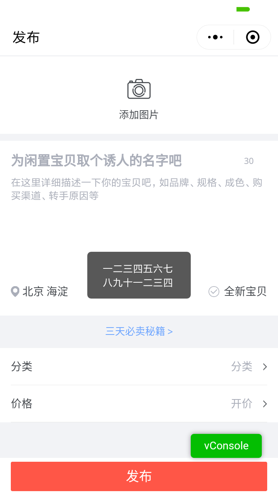

不受长度限制、不受层级约束的原生toast
背景
- 原生toast存在长度限制，超过7个汉字会被截断；
- 自定义toast组件 无法覆盖textarea、canvas、video、map等层级最高的原生组件；且需要每个页面反复引入，使用较为繁琐。
功能
- 不受长度限制、不受层级约束的原生toast
- 支持Promise
原理
- 文案简洁时，使用带图标的原生toast
- 文案较多时，自动改用不带图标的原生toast
- 文案巨长时，自动改用系统弹窗
尤其适用于后端返回的不定长报错信息/提示文案
效果



使用
app.wpy:
import './appPlugin'appPlugin.js:
import {registerToThis} from 'fancy-mini/lib/wepyKit';
import AdaptiveToast from 'fancy-mini/lib/AdaptiveToast';
//长度自适应的原生toast
let toast = (new AdaptiveToast({
icons: {
success: '/images/tipsucc.png',
fail: '/images/tipfail.png'
}
})).toast;
registerToThis('$toast', toast);
export { //导出部分api，方便lib文件使用
toast
}页面/组件：
//普通使用示例
this.$toast({
title: '一二三四五六七',
type: 'fail',
});
//promise使用示例
async onSubmit(){
//....
await this.$toast({
title: resp.errMsg,
type: 'fail',
});
console.log('toast over');
//....
}项目引入及非wepy项目使用方式见 README